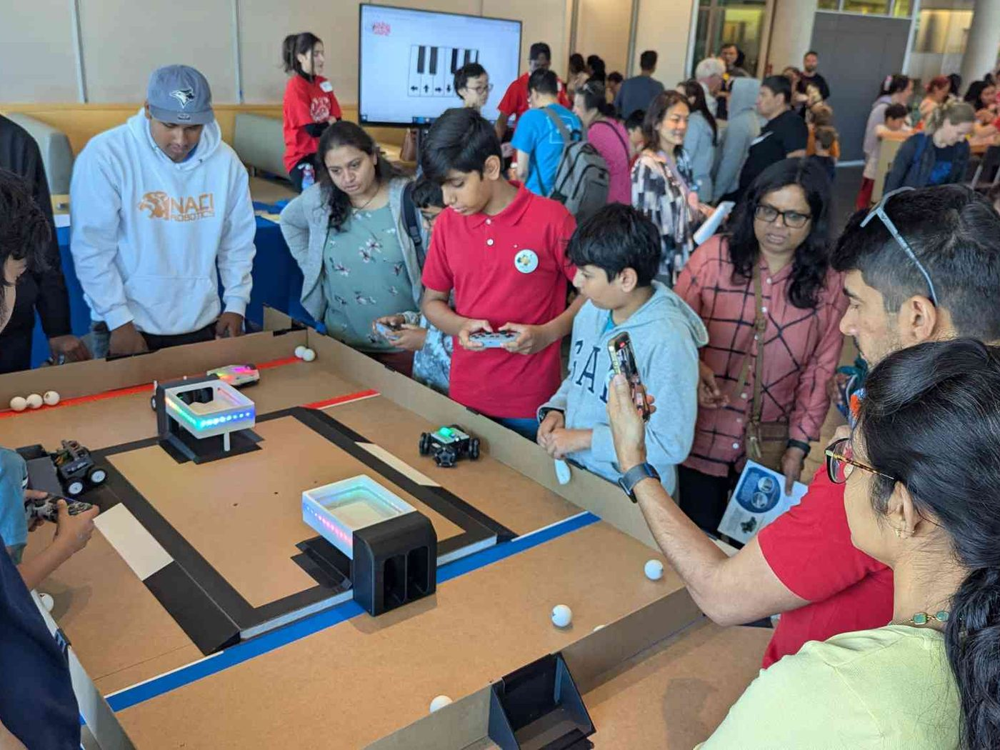
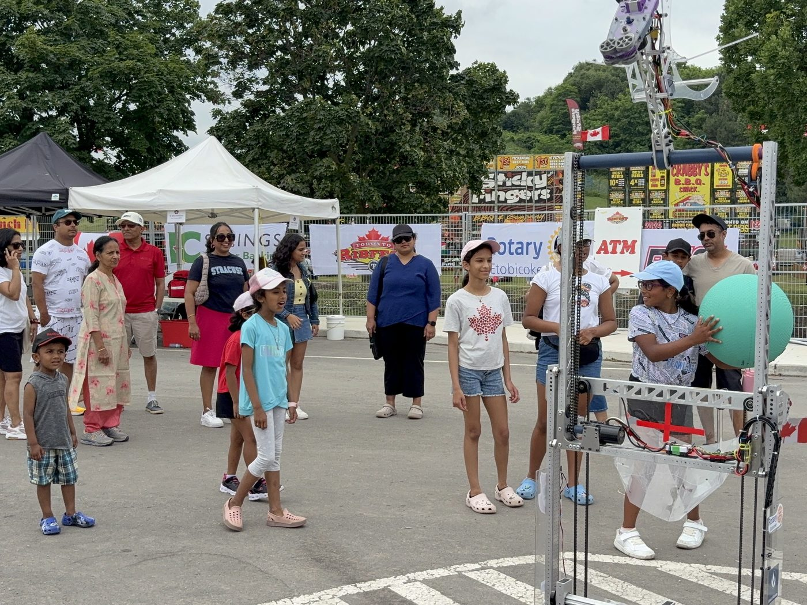
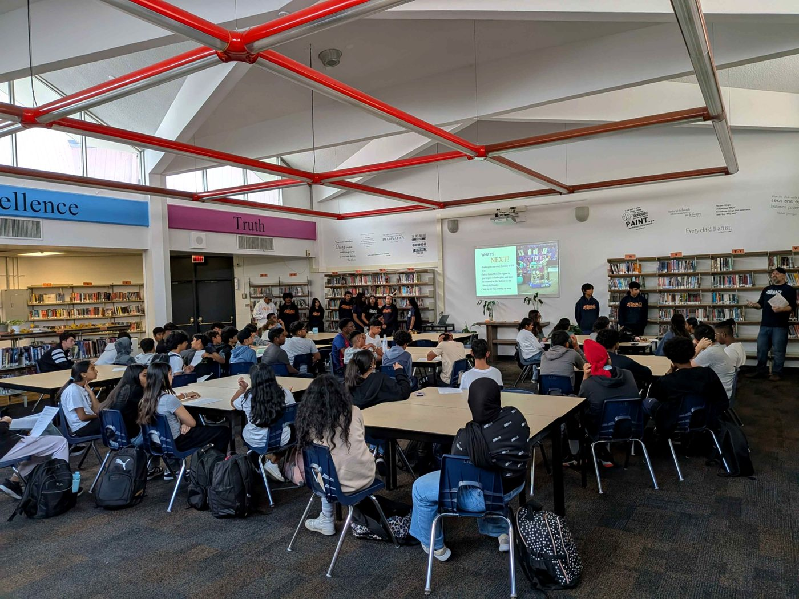
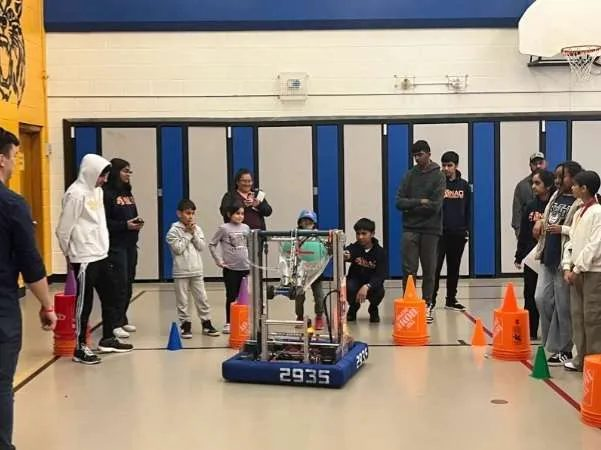
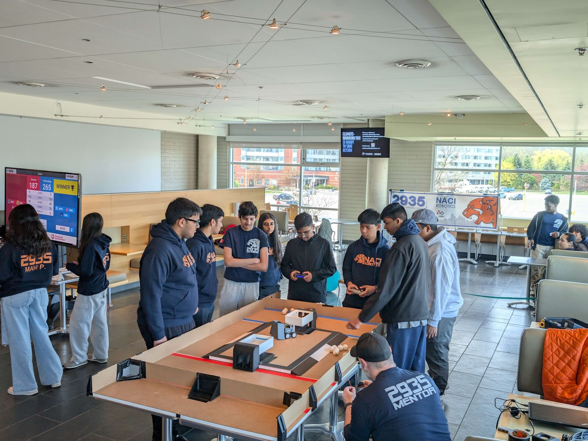

Outreach
Beyond The Build
Competing is half of what we do. The rest is making sure robotics does not stop at our build room door.

Science
Rendezvous
The Science Rendezvous is one of our most significant annual outreach events. This year’s event provided parents and youth with an opportunity to explore the diverse components of our program at NACI Robotics. Here, they learned about our team’s upcoming First Lego League event, controlled the Minibots created by Lord of Robots, and played with Azure, our 2025 FIRST Robotics Competition season robot from the REEFSCAPE game, which successfully advanced to the World Championships.
Ribfest
We had a fantastic day representing NACI Robotics at the Rotary Club’s annual Ribfest. This community event provided a perfect platform to spread information about our initiatives and, more importantly, to create positive, memorable connections with the local youth. Our presentation and robot were so engaging that we almost forgot about the delicious food! It was a great success and left many who attended the event well informed about STEM and other important skills.


West Humber
Junior Middle
NACI Robotics was excited to attend the Open House at West Humber Junior Middle School. We truly enjoyed the opportunity to share exciting information about our robotics program at NACI. And most importantly, creating fun and inspiring memories for the enthusiastic youth in the local community. It was a fantastic day connecting with future leaders who share a passion for STEM!
We Run Programs Too
HackNights, FIRST LEGO League and MiniBots run alongside our own season, for students who want to start building before they reach FRC.
See our programs
